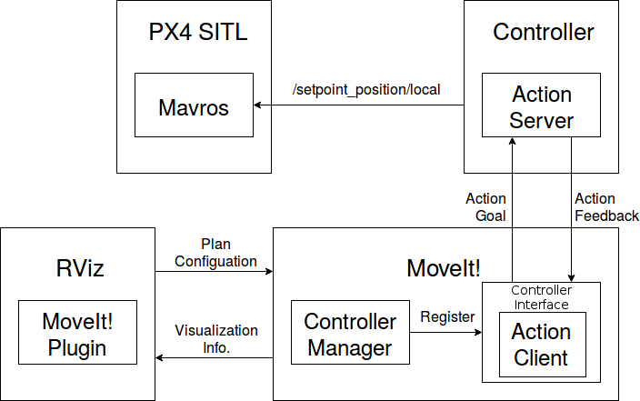

MoveIt!を使ってGazeboモデルを動かす¶
この記事では、前回までに作成したiris_moveit_configパッケージとMoveIt! RVizプラグインを使って動作計画を行い、ドローンの制御を行います。
ドローンを移動させられるようにするには、プラグインやアクションサーバーなどを実装する必要があるので、はじめにMoveIt!を用いてロボットを動かす方法と、今回使用するアプリケーションの概要を説明します。
MoveIt!を用いてロボットを動かす方法¶
MoveIt!を用いてロボットを動かすには、主に、
MoveIt!の提供するコントローラマネージャを使う
ros_controlを使う
の２つの方法があります。 以下では、これら２つの方法について説明します。
コントローラマネージャを使う¶
MoveIt!のRvizデモを試す では、RVizを用いてドローンの動作計画を行いました。 動作計画を行うと、生成されたドローンの動作がRVizに表示されましたが、RVizで表示されるのは計画だけなので実際にロボットを動かすには制御入力などをロボットに送るコントローラーが必要になります。
ロボットを制御するのに必要な制御則や入力は、ロボットの種類によって異なるので、違うロボットには違うコントローラを使わなければなりません。 しかし、異なるロボットのコントローラを全てMoveIt!の開発者が実装したり、誰かが実装したコントローラをその都度MoveIt!に取り入れるのは現実的ではありません。 そこで、MoveIt!では、ROSアクション の仕組みを用いることで、MoveIt!の提供するアクションに対応するコントローラであればどのようなものでも使用できるようにしてあります。
ROSアクションは、ROSサービスに似た、ノードが一対一で通信するための仕組みです。 サービスは、クライアントがサーバにリクエストを送信すると、結果が帰ってくるまではサーバーからのフィードバックは一切ありませんが、アクションでは実行状況に応じてフィードバックが帰ってきます。 また、アクションは途中で中断することも可能で、ロボットをスタートからゴールに移動させるような、時間のかかる処理に適しています。
MoveIt!では、下図のように、コントローラインターフェース（以下インターフェース）内で定義されたアクションクライアントが、アクションの目的であるアクションゴールを、コントローラ内で定義されたアクションサーバに送信し、それを受け取ったアクションサーバがロボットへ制御指令を入力するような形をとっています。 使用するアクションの種類によって、用いるインターフェースが異なります。
下図中のコントローラマネージャ（以下マネージャ）は、インターフェースをMoveIt!に登録する役割があります。 MoveIt!にインターフェースを登録することで、生成された動作を実行する命令を受けた際に、動作の情報がインターフェースへと送られ、そこからコントローラへと送信されるようになります。 マネージャにはいくつかの種類があり、種類によって使用できるインターフェースが異なります。

生成された動作を実行する際の流れを図示すると以下のようになります。
インターフェースに実行する動作の情報が送信される
インターフェースがアクションサーバに対してアクションゴール（目標）を送信する
アクションゴールを受け取ったコントローラがロボットに制御入力を送る

以上をまとめると、MoveIt!では、インターフェースが実行する動作の情報をコントローラへ送信し、それを受け取ったコントローラが、ロボットを動作させるための制御入力をロボットに送信する、といった形になっています。 インターフェースが、実行される動作の情報をコントローラへ送信できるようにするためには、マネージャがインターフェースをMoveIt!に登録する必要があります。
以下では、マネージャ、インターフェース、コントローラのそれぞれの要素について更に詳しく見ていきます。
マネージャ¶
MoveIt!がデフォルトで提供しているマネージャには、以下の２つのものがあります。
MoveItFakeControllerManager
MoveItSimpleControllerManager
MoveItFakeControllerManagerは、シミュレーションで用いられるマネージャで、RVizを使って動作を可視化するときなどに使われています。 MoveItSimpleControllerManagerは、FollowJointTrajectoryとGripperCommandの２つのインターフェースをサポートしており、これらは実際にロボットを制御する際に使うことができます。
マネージャは controller_list パラメータに指定されたインターフェースをMoveIt!に登録します。
同時に、制御される関節などの情報も与えられ、これをもとにロボットの制御が行われます。
パラメータに関しては、Low Level Controllers を見てください。
また、使用するマネージャは、 moveit_controller_manager の値を変更することで指定できます。
インターフェース¶
MoveIt!がデフォルトで提供するインターフェースは以下の２つです。
- FollowJointTrajectoryインターフェース
アームもしくはロボット自体の制御
- GripperCommandインターフェース
グリッパーの制御
それぞれ、FollowJointTrajectory アクションと、GripperCommand アクションを使用します。
コントローラ¶
MoveItSimpleControllerManagerを使用する場合には、コントローラは自分で実装する必要があります。
上述の通り、FollowJointTrajectoryインターフェースはFollowJointTrajectoryアクションを、GripperCommandは、GripperCommandアクションを使うので、これらのインターフェースを使う場合には適したアクションサーバーを実装する必要があります。
アクションサーバーの実装に関しては、actionlibのチュートリアル を参照してください。
ros_control¶
ros_control には、関節の速度制御や力制御、位置制御などを行うためのプラグインが複数用意されています。 ros_controlに関しては、以下のリンクが参考になります。
アプリケーションの構成¶
今回使用するアプリケーション全体の構成は以下のようになっています。
上で説明した基本の構成に、動作計画の設定を行うRVizとドローンのシミュレーションを行うPX4 SITLシミュレータが追加されています。
この構成では、コントローラはROSアクションを通じて生成された動作の情報を受け取り、生成した経由点を /mavros/setpoint_position/local トピックにパブリッシュすることでドローンを制御します。
RViz¶
RVizは MoveIt!のRvizデモを試す で見たように、経路の設定をMoveIt!側に送り、MoveIt!が生成した経路の情報を元に可視化を行います。
マネージャ¶
MoveItSimpleControllerManagerは、FollowJointTrajectoryインターフェースとGripperCommandインターフェースにしか対応しておらず、FollowJointTrajectoryインターフェースは多自由度の関節の制御には使えないので、新たなマネージャを作成する必要があります。
今回はMoveItMultiDOFControllerManagerという名前の新しいマネージャを作成します。 コードの詳細については、コード解説（マネージャ) を参照してください。
1 2 3 4 5 6 7 8 9 10 11 12 13 14 15 16 17 18 19 20 21 22 23 24 25 26 27 28 29 30 31 32 33 34 35 36 37 38 39 40 41 42 43 44 45 46 47 48 49 50 51 52 53 54 55 56 57 58 59 60 61 62 63 64 65 66 67 68 69 70 71 72 73 74 75 76 77 78 79 80 81 82 83 84 85 86 87 88 89 90 91 92 93 94 95 96 97 98 99 100 101 102 103 104 105 106 107 108 109 110 111 112 113 114 115 116 117 118 119 120 121 122 123 124 125 126 127 128 129 130 131 132 133 134 135 136 137 138 139 140 141 142 143 144 145 146 147 148 149 150 151 152 153 154 155 156 157 158 159 160 161 162 163 164 165 166 167 168 169 170 171 172 173 174 175 176 177 178 179 180 181 182 183 184 185 186 187 188 189 190 191 192 193 194 195 196 197 198 199 200 201 202 203 204 205 206 207 208 209 210 211 212 213 214 215 216 217 218 219 220 221 | /**
* @file moveit_multi_dof_controller_manager.cpp
* @brief Controller manager for multi DOF joint
*/
#include <ros/ros.h>
#include <moveit/controller_manager/controller_manager.h>
#include <dronedoc/follow_multi_dof_joint_trajectory_controller_handle.hpp>
#include <sensor_msgs/JointState.h>
#include <pluginlib/class_list_macros.hpp>
namespace dronedoc
{
class MoveItMultiDOFControllerManager : public moveit_controller_manager::MoveItControllerManager
{
public:
/**
* @brief Default constructor
*/
MoveItMultiDOFControllerManager() : node_handle_("~")
{
// Error if controller_list param is not set
if (!node_handle_.hasParam("controller_list"))
{
ROS_ERROR_STREAM_NAMED("manager", "No controller_list specified.");
return;
}
XmlRpc::XmlRpcValue controller_list;
node_handle_.getParam("controller_list", controller_list);
// Error if controller_list is not an array
if (controller_list.getType() != XmlRpc::XmlRpcValue::TypeArray)
{
ROS_ERROR("Parameter controller_list should be specified as an array");
return;
}
// Error if multiple controller is defined
if(controller_list.size() > 1)
{
ROS_ERROR("This controller manager expects only one controller.");
return;
}
// Error if controller not have required fields
if (!controller_list[0].hasMember("name") || !controller_list[0].hasMember("joints"))
{
ROS_ERROR_STREAM_NAMED("manager", "Name and joints must be specifed for each controller");
return;
}
try
{
std::string name = std::string(controller_list[0]["name"]);
std::string action_ns;
// Warn if controller has "ns" field
if (controller_list[0].hasMember("ns"))
{
action_ns = std::string(controller_list[0]["ns"]);
ROS_WARN_NAMED("manager", "Use of 'ns' is deprecated, use 'action_ns' instead.");
} // Set action namespace
else if (controller_list[0].hasMember("action_ns"))
action_ns = std::string(controller_list[0]["action_ns"]);
else // Warn if "action_ns" not specified
ROS_WARN_NAMED("manager", "Please note that 'action_ns' no longer has a default value.");
// Error if "joints" field is not array
if (controller_list[0]["joints"].getType() != XmlRpc::XmlRpcValue::TypeArray)
{
ROS_ERROR_STREAM_NAMED("manager", "The list of joints for controller " << name
<< " is not specified as an array");
return;
}
// Error if controller not have "type" field
if (!controller_list[0].hasMember("type"))
{
ROS_ERROR_STREAM_NAMED("manager", "No type specified for controller " << name);
return;
}
std::string type = std::string(controller_list[0]["type"]);
// Set controller handle if "type" is FollowMultiDOFJointTrajectory
moveit_simple_controller_manager::ActionBasedControllerHandleBasePtr new_handle;
if (type == "FollowMultiDOFJointTrajectory")
{
new_handle.reset(new FollowMultiDOFJointTrajectoryControllerHandle(name, action_ns));
if (static_cast<FollowMultiDOFJointTrajectoryControllerHandle*>(new_handle.get())->isConnected())
{
ROS_INFO_STREAM_NAMED("manager", "Added FollowJointTrajectory controller for " << name);
controller_ = new_handle;
}
}
else
{
ROS_ERROR_STREAM_NAMED("manager", "Unknown controller type: " << type.c_str());
return;
}
/* add list of joints, used by controller manager and MoveIt! */
for (int i = 0; i < controller_list[0]["joints"].size(); ++i)
controller_->addJoint(std::string(controller_list[0]["joints"][i]));
}
catch (...)
{
ROS_ERROR_STREAM_NAMED("manager", "Caught unknown exception while parsing controller information");
}
}
/**
* @brief Destructor
*/
~MoveItMultiDOFControllerManager() override
{
}
/**
* @brief Returns pointer to controller handle
* @param name
*/
moveit_controller_manager::MoveItControllerHandlePtr getControllerHandle(const std::string& name) override
{
return static_cast<moveit_controller_manager::MoveItControllerHandlePtr>(controller_);
}
/**
* @brief Add FollowMultiDOFJointTrajectory to controller list
* @param names
*
* This manager only deals FollowMultiDOFJointTrajectory controller
*/
void getControllersList(std::vector<std::string>& names) override
{
names.push_back("FollowMultiDOFJointTrajectory");
}
/**
* @brief Get all controllers
* @param names
*
* This plugin assumes that all controllers are already active -- and if they are not, well, it has no way to deal
* with it anyways!
*/
void getActiveControllers(std::vector<std::string>& names) override
{
getControllersList(names);
}
/**
* @brief Get all controllers
* @param names
*
* Controller must be loaded to be active, see comment above about active controllers...
*/
virtual void getLoadedControllers(std::vector<std::string>& names)
{
getControllersList(names);
}
/**
* @brief Get the list of joints that a controller can control.
* @param name Controller name
* @param joints List of joints
*/
void getControllerJoints(const std::string& name, std::vector<std::string>& joints) override
{
if (name == "FollowMultiDOFJointTrajectory")
{
controller_->getJoints(joints);
}
else
{
ROS_WARN_NAMED("manager", "The joints for controller '%s' are not known. Perhaps the controller configuration is "
"not loaded on the param server?",
name.c_str());
joints.clear();
}
}
/**
* @brief Get state of controller specified by name
* @param name
*
* Controllers are all active and default.
*/
moveit_controller_manager::MoveItControllerManager::ControllerState
getControllerState(const std::string& name) override
{
moveit_controller_manager::MoveItControllerManager::ControllerState state;
state.active_ = true;
state.default_ = true;
return state;
}
/**
* @brief Switch controllers
* @param activate
* @param deactivate
*
* Cannot switch our controllers
*/
bool switchControllers(const std::vector<std::string>& activate, const std::vector<std::string>& deactivate) override
{
return false;
}
protected:
ros::NodeHandle node_handle_;
moveit_simple_controller_manager::ActionBasedControllerHandleBasePtr controller_;
};
} // end namespace dronedoc
PLUGINLIB_EXPORT_CLASS(dronedoc::MoveItMultiDOFControllerManager,
moveit_controller_manager::MoveItControllerManager);
|
インターフェース¶
上述の通り、FollowJointTrajectoryは他自由度の関節の制御には使えないので、他自由度の関節用のFollowMultiDOFJointTrajectoryインターフェースを新しく作成します。
インターフェースはsrcディレクトリではなく、include/<package_name>ディレクトリに保存します。 <package_name>の部分は自分の環境に合わせて変更してください。
コードの詳細については、コード解説（インターフェース) を参照してください。
1 2 3 4 5 6 7 8 9 10 11 12 13 14 15 16 17 18 19 20 21 22 23 24 25 26 27 28 29 30 31 32 33 34 35 36 37 38 39 40 41 42 43 44 45 46 47 48 49 50 51 52 53 54 55 56 57 58 59 60 61 62 63 64 65 66 67 68 69 70 71 72 73 74 75 76 77 78 79 80 81 82 83 84 85 86 87 88 89 90 91 92 93 94 95 96 97 98 99 100 101 102 103 104 105 106 107 108 109 110 111 112 113 114 115 116 117 118 119 120 121 122 123 124 125 126 127 128 129 130 131 132 133 134 135 136 137 138 | /**
* @file follow_multi_dof_joint_trajectory_controller_handle.cpp
* @brief Action client for ExecuteTrajectory action
*/
#ifndef MOVEIT_PLUGINS_FOLLOW_MULTI_DOF_TRAJECTORY_CONTROLLER_HANDLE
#define MOVEIT_PLUGINS_FOLLOW_MULTI_DOF_TRAJECTORY_CONTROLLER_HANDLE
#include <moveit_simple_controller_manager/action_based_controller_handle.h>
#include <moveit_msgs/ExecuteTrajectoryAction.h>
namespace dronedoc
{
/**
* @brief Controller for multi DOF joint trajectory
*
* This is generally used for arms, but could also be used for multi-dof hands,
* or anything using a control_mgs/FollowJointTrajectoryAction.
*/
class FollowMultiDOFJointTrajectoryControllerHandle
: public moveit_simple_controller_manager::ActionBasedControllerHandle<moveit_msgs::ExecuteTrajectoryAction>
{
public:
/**
* @brief Constructor
* @param name
* @param action_ns
*/
FollowMultiDOFJointTrajectoryControllerHandle(const std::string& name, const std::string& action_ns)
: ActionBasedControllerHandle<moveit_msgs::ExecuteTrajectoryAction>(name, action_ns)
{
}
/**
* @brief Send ExecuteTrajectoryGoal message to action server
* @param trajectory Trajectory to follow
*/
bool sendTrajectory(const moveit_msgs::RobotTrajectory& trajectory) override
{
ROS_DEBUG_STREAM_NAMED("FollowMultiDOFJointTrajectoryController", "new trajectory to " << name_);
if (!controller_action_client_)
return false;
if (!trajectory.joint_trajectory.points.empty())
{
ROS_WARN_NAMED("FollowMultiDOFJointTrajectoryController", "%s cannot execute trajectories(trajectory_msgs/JointTrajectory).", name_.c_str());
}
if (done_)
ROS_DEBUG_STREAM_NAMED("FollowMultiDOFJointTrajectoryController", "sending trajectory to " << name_);
else
ROS_DEBUG_STREAM_NAMED("FollowMultiDOFJointTrajectoryController",
"sending continuation for the currently executed trajectory to " << name_);
// Send ExecuteTrajectoryGoal message
moveit_msgs::ExecuteTrajectoryGoal goal;
goal.trajectory = trajectory;
controller_action_client_->sendGoal(
goal, boost::bind(&FollowMultiDOFJointTrajectoryControllerHandle::controllerDoneCallback, this, _1, _2),
boost::bind(&FollowMultiDOFJointTrajectoryControllerHandle::controllerActiveCallback, this),
boost::bind(&FollowMultiDOFJointTrajectoryControllerHandle::controllerFeedbackCallback, this, _1));
done_ = false;
last_exec_ = moveit_controller_manager::ExecutionStatus::RUNNING;
return true;
}
/**
* @brief Cancel trajecotry execution
*/
bool cancelExecution() override
{
// do whatever is needed to cancel execution
return true;
}
/**
* @brief Wait trajectory execution
* @param duration
*/
bool waitForExecution(const ros::Duration& duration) override
{
// wait for the current execution to finish
return true;
}
protected:
/**
* @brief Called when server complete action
* @param state
* @param result
*/
void controllerDoneCallback(const actionlib::SimpleClientGoalState& state,
const moveit_msgs::ExecuteTrajectoryResultConstPtr& result)
{
// Output custom error message for FollowJointTrajectoryResult if necessary
if (result)
{
if(result->error_code.val == moveit_msgs::MoveItErrorCodes::SUCCESS)
{
ROS_INFO_NAMED("FollowMultiDOFTrajectoryContoller", "Execution Succeeded.");
}
else
{
ROS_ERROR("Returned Error Code %d", result->error_code.val);
ROS_ERROR("For Detailse of Error Code, see moveit_msgs/MoveItErrorCodes.msg");
}
}
else
{
ROS_WARN_STREAM("Controller " << name_ << ": no result returned");
}
finishControllerExecution(state);
}
/**
* @brief Called when goal become active
*/
void controllerActiveCallback()
{
ROS_DEBUG_STREAM_NAMED("FollowMultiDOFJointTrajectoryController", name_ << " started execution");
}
/**
* @brief Called when feedback arrived from server
* @param feedback
*/
void controllerFeedbackCallback(const moveit_msgs::ExecuteTrajectoryFeedbackConstPtr& feedback)
{
}
};
} // end namespace dronedoc
#endif // MOVEIT_PLUGINS_FOLLOW_MULTI_DOF_TRAJECTORY_CONTROLLER_HANDLE
|
コントローラ¶
今回は、 FollowMultiDOFJointTrajectory アクションのGoalを受け取り、それをドローンに目標位置として送信するノードをコントローラーとして用います。
コードの詳細については、コード解説（コントローラ) を参照してください。
1 2 3 4 5 6 7 8 9 10 11 12 13 14 15 16 17 18 19 20 21 22 23 24 25 26 27 28 29 30 31 32 33 34 35 36 37 38 39 40 41 42 43 44 45 46 47 48 49 50 51 52 53 54 55 56 57 58 59 60 61 62 63 64 65 66 67 68 69 70 71 72 73 74 75 76 77 78 79 80 81 82 83 84 85 86 87 88 89 90 91 92 93 94 95 96 97 98 99 100 101 102 103 104 105 106 107 108 109 110 111 112 113 114 115 116 117 118 119 120 121 122 123 124 125 126 127 128 129 130 131 132 133 134 135 136 137 138 139 140 141 142 143 144 145 146 147 148 149 150 151 152 153 154 155 156 157 158 159 160 161 162 163 164 165 166 167 168 169 170 171 172 173 174 175 176 177 178 179 180 181 182 183 184 185 186 187 188 189 190 191 192 193 194 195 196 197 198 199 200 201 202 203 204 205 206 207 208 209 210 211 212 213 214 215 216 217 218 219 220 221 222 223 224 225 226 227 228 229 230 231 232 233 234 235 236 237 238 239 240 241 242 243 244 245 246 247 248 249 250 251 252 253 254 255 256 257 258 259 260 261 262 263 264 265 266 267 268 269 270 271 272 273 274 275 276 277 278 279 280 281 282 283 284 285 286 287 288 289 290 291 292 293 294 295 296 297 298 299 300 301 302 303 304 305 306 307 308 309 310 311 312 313 314 315 316 317 318 319 320 321 322 323 324 325 326 | /**
* @file drone_controller.cpp
* @brief PX4 based UAV controller for moveit
*/
#include <vector>
#include <array>
#include <string>
#include <cmath>
#include <ros/ros.h>
#include <geometry_msgs/Transform.h>
#include <geometry_msgs/PoseStamped.h>
#include <moveit_msgs/ExecuteTrajectoryAction.h>
#include <moveit_msgs/RobotTrajectory.h>
#include <mavros_msgs/State.h>
#include <trajectory_msgs/MultiDOFJointTrajectory.h>
#include <trajectory_msgs/MultiDOFJointTrajectoryPoint.h>
#include <actionlib/server/simple_action_server.h>
class DroneController{
private:
ros::NodeHandle nh_;
//! Action name of ExecuteTrajectory
std::string action_name_;
//! Server of ExecuteTrajectoryAction
actionlib::SimpleActionServer<moveit_msgs::ExecuteTrajectoryAction> as_;
//! Feedback message of ExecuteTrajectoryAction
moveit_msgs::ExecuteTrajectoryFeedback feedback_;
//! Result message of ExecuteTrajectoryAction
moveit_msgs::ExecuteTrajectoryResult result_;
//! Position command publisher
ros::Publisher cmd_pos_pub_;
//! Subscriber of local position
ros::Subscriber local_pos_sub_;
//! Subscriber of UAV state
ros::Subscriber state_sub_;
//! Current pose of UAV
geometry_msgs::PoseStamped current_pose_;
//! Current state of UAV
mavros_msgs::State current_state_;
public:
/**
* @brief Constructor
* @param action_name Action name
*/
DroneController(std::string action_name) :
action_name_(action_name),
as_(nh_, action_name, boost::bind(&DroneController::executeCb, this, _1), false)
{
as_.start();
// Position command publisher setup
std::string cmd_pos_topic;
nh_.param<std::string>("mavros_setpoint_topic", cmd_pos_topic, "/mavros/setpoint_position/local");
cmd_pos_pub_ = nh_.advertise<geometry_msgs::PoseStamped>(cmd_pos_topic, 10);
// Local position subscriber setup
std::string local_pos_topic;
nh_.param<std::string>("mavros_localpos_topic", local_pos_topic, "/mavros/local_position/pose");
auto local_pos_cb = boost::bind(&DroneController::localPosCb, this, _1);
local_pos_sub_ = nh_.subscribe<geometry_msgs::PoseStamped>(local_pos_topic, 10, local_pos_cb);
// UAV state subscriber setup
std::string state_topic;
nh_.param<std::string>("mavros_state_topic", state_topic, "/mavros/state");
auto state_cb = boost::bind(&DroneController::stateCb, this, _1);
state_sub_ = nh_.subscribe<mavros_msgs::State>(state_topic, 10, state_cb);
ROS_INFO("Action server initialized.");
};
/**
* @brief Destructor
*/
~DroneController()
{
};
private:
/**
* @brief Callback of ExecuteTrajectory action
* @param goal Goal of ExecuteTrajectory action
*/
void executeCb(const moveit_msgs::ExecuteTrajectoryGoalConstPtr &goal)
{
ROS_INFO("Action received.");
ros::Rate rate(20);
std::vector<trajectory_msgs::MultiDOFJointTrajectoryPoint> trajectory;
trajectory = goal->trajectory.multi_dof_joint_trajectory.points;
// Wait for connection
ROS_INFO("Waiting for FCU connection...");
while (ros::ok() and not current_state_.connected)
{
ros::spinOnce();
rate.sleep();
}
ROS_INFO("FCU connection established.");
// Position command need to be published to switch mode to OFFBOARD
for(int i=0; i<10; ++i)
{
cmd_pos_pub_.publish(getPoseFromTrajectory(trajectory.front()));
}
for(int i=0; i < trajectory.size()-1; ++i)
{
ROS_INFO("Moving to waypoint No. %d", i);
// Send feedback (progress of path)
feedback_.state = std::to_string(i);
as_.publishFeedback(feedback_);
// Get PoseStamped message from MultiDOFJointTrajectoryPoint
geometry_msgs::PoseStamped start = getPoseFromTrajectory(trajectory.at(i));
geometry_msgs::PoseStamped goal = getPoseFromTrajectory(trajectory.at(i+1));
// Get interpolated path from two waypoints
std::vector<geometry_msgs::PoseStamped> path = getBilinearPath(start, goal);
// Publish all interpolated points
for(auto pose: path)
{
// Publish same message till drone arrives to local goal
while(not isGoalReached(pose) and not as_.isPreemptRequested())
{
cmd_pos_pub_.publish(pose);
ros::spinOnce();
rate.sleep();
}
// Exit loop if new action arrived
if(as_.isPreemptRequested() or not ros::ok())
{
result_.error_code.val = moveit_msgs::MoveItErrorCodes::PREEMPTED;
as_.setPreempted();
ROS_INFO("Action preempted.");
break;
}
}
// Exit loop if new action arrived
if(as_.isPreemptRequested() or not ros::ok())
{
result_.error_code.val = moveit_msgs::MoveItErrorCodes::PREEMPTED;
as_.setPreempted();
ROS_INFO("Action preempted.");
break;
}
rate.sleep();
}
// Success
result_.error_code.val = moveit_msgs::MoveItErrorCodes::SUCCESS;
as_.setSucceeded(result_);
ROS_INFO("Action completed.");
}
/**
* @brief Return interpolated path using bilinear interpolation from two waypoints
* @param start Start waypoint
* @param goal Goal waypoint
* @param step Step size of interpolation
* @return Vector of interpolated path
*/
std::vector<geometry_msgs::PoseStamped> getBilinearPath(const geometry_msgs::PoseStamped &start,
const geometry_msgs::PoseStamped &goal,
const double step=0.05)
{
std::vector<geometry_msgs::PoseStamped> bilinear_path;
// Store x-y and x-z coordinates of start point
std::array<double, 2> start_xy = {start.pose.position.x, start.pose.position.y};
std::array<double, 2> start_xz = {start.pose.position.x, start.pose.position.z};
// Store x-y and x-z coordinates of goal point
std::array<double, 2> goal_xy = {goal.pose.position.x, goal.pose.position.y};
std::array<double, 2> goal_xz = {goal.pose.position.x, goal.pose.position.z};
// x-y and x-z coordinates of interpolated points
std::array<std::vector<double>, 2> points_xy = linearInterp(start_xy, goal_xy, step);
std::array<std::vector<double>, 2> points_xz = linearInterp(start_xz, goal_xz, step);
// Number of generated points by interpolation
int num_points = points_xy.at(0).size();
try
{
// Generate PoseStamped message from std::array
for(int i=0; i<num_points; ++i)
{
geometry_msgs::PoseStamped pose;
pose.pose.orientation = start.pose.orientation;
pose.pose.position.x = points_xy.front().at(i);
pose.pose.position.y = points_xy.back().at(i);
pose.pose.position.z = points_xz.back().at(i);
bilinear_path.push_back(pose);
}
}
catch (std::out_of_range &ex)
{
ROS_ERROR("%s", ex.what());
}
return bilinear_path;
}
/**
* @brief Perform linear interpolation
* @param p1 First point
* @param p2 Second point
* @param step Step size of interpolation
* @return Array of interpolated points in the shape of [x-points, y-points]
*/
std::array<std::vector<double>, 2> linearInterp(const std::array<double, 2> &p1,
const std::array<double, 2> &p2, const double step)
{
// Gradient
double a = (p1.at(1) - p2.at(1)) / (p1.at(0) - p2.at(0));
// Intercept
double b = p1.at(1) - a*p1.at(0);
// Number of steps
int num_steps = std::floor((p2.at(0) - p1.at(0))/step);
// Initialize container for interpolated points
std::vector<double> points_x(num_steps+1);
// Set interpolated points
points_x.front() = p1.at(0);
for(int i=1; i<num_steps; ++i)
{
points_x.at(i) = step * i + p1.at(0);
}
points_x.back() = p2.at(0);
// Initialize container for interpolated points
std::vector<double> points_y(num_steps+1);
// Set interpolated points
points_y.front() = p1.at(1);
for(int i=1; i<num_steps; ++i)
{
points_y.at(i) = a*(p1.at(0) + i*step) + b;
}
points_y.back() = p2.at(1);
// Initialize container for vector of points
std::array<std::vector<double>, 2> points;
points.front() = points_x;
points.back() = points_y;
return points;
}
/**
* @brief Convert MultiDOFJointTrajectoryPoint message to PoseStamped message
* @param trajectory_pt MultiDOFJointTrajectoryPoint message
* @return Pose converted from Trajectory msg
*/
geometry_msgs::PoseStamped getPoseFromTrajectory(const trajectory_msgs::MultiDOFJointTrajectoryPoint &trajectory_pt)
{
geometry_msgs::PoseStamped pose;
pose.header.stamp = ros::Time::now();
pose.pose.position.x = trajectory_pt.transforms.front().translation.x;
pose.pose.position.y = trajectory_pt.transforms.front().translation.y;
pose.pose.position.z = trajectory_pt.transforms.front().translation.z;
pose.pose.orientation = trajectory_pt.transforms.front().rotation;
return pose;
}
/**
* @brief Returns true if drone is reached goal
* @param goal
* @param tolerance Consider drone reached goal if drone is within the circle with diameter of this value
* @return True if drone is reched goal, false if else
*/
inline bool isGoalReached(const geometry_msgs::PoseStamped &goal, const double tolerance=0.1)
{
double error = std::sqrt(std::pow(goal.pose.position.x - current_pose_.pose.position.x, 2)
+ std::pow(goal.pose.position.y - current_pose_.pose.position.y, 2)
+ std::pow(goal.pose.position.z - current_pose_.pose.position.z, 2));
return error < tolerance ? true : false;
}
/**
* @brief Callback for local position subscriber
* @msg Incoming message
*/
void localPosCb(const geometry_msgs::PoseStamped::ConstPtr &msg)
{
current_pose_ = *msg;
}
/**
* @brief Callback for state subscriber
* @msg Incoming message
*/
void stateCb(const mavros_msgs::State::ConstPtr &msg)
{
current_state_ = *msg;
}
};
int main(int argv, char **argc)
{
ros::init(argv, argc, "drone_controller");
DroneController controller("iris_group_controller/follow_multi_dof_joint_trajectory");
ros::spin();
return 0;
}
|
CMakeLists.txt¶
find_package に使用するパッケージを追加します。
find_package(catkin REQUIRED COMPONENTS
...
actionlib
trajectory_msgs
pluginlib
moveit_msgs
moveit_core
)
コントローラインターフェースをインクルードできるように、インクルードディレクトリを指定します。
catkin_package(
INCLUDE_DIRS include
...
)
コントローラマネージャをコンパイルしてライブラリをリンクするために以下の内容を追加します。
コントローラマネージャはノードではなく、ライブラリなので、 add_library を使います。
他のパッケージのライブラリと名前が重複しないようにライブラリ名の先頭に ${PROJECT_NAME}_ をつけます。
今回のプロジェクト名は dronedoc なので、こうすることで libdronedoc_moveit_multi_dof_controller_manager という名前のライブラリができます。
add_library(${PROJECT_NAME}_moveit_multi_dof_controller_manager src/moveit_multi_dof_controller_manager.cpp)
target_link_libraries(${PROJECT_NAME}_moveit_multi_dof_controller_manager ${catkin_LIBRARIES} ${Boost_LIBRARIES})
コントローラをコンパイルしてライブラリをリンクするために以下の内容を追加します。
add_executable(drone_controller src/drone_controller.cpp)
target_link_libraries(drone_controller ${catkin_LIBRARIES})
moveit_multi_dof_controller_manager_plugin_description.xml¶
プラグインローダーがプラグインを見つけられるように、プラグインの情報を記述するファイルを作成します。
1 2 3 4 5 6 7 8 9 | <library path="libdronedoc_moveit_multi_dof_controller_manager">
<class name="dronedoc/MoveItMultiDOFControllerManager"
type="dronedoc::MoveItMultiDOFControllerManager"
base_class_type="moveit_controller_manager::MoveItControllerManager">
<description>
</description>
</class>
</library>
|
それぞれのタグ及びフィールドの意味は以下のとおりです。
pathライブラリのパス。CMakeLists.txtの
add_library内で指定した名前の先頭にlibを追加したもの（今回の場合はlibdronedoc_moveit_multi_dof_controller_manager）がライブラリ名になる。typeプラグインの型名。名前空間から指定する必要がある。
base_classプラグインのベースクラスの型名。名前空間から指定する必要がある。
nameプラグイン名
descriptionプラグインの説明
package.xml¶
pluginlibを使用するので、package.xmlの依存パッケージにpluginlibを追加します。
<depend>pluginlib</depend>
また、<export> タグ内でプラグインをエクスポートします。
moveit_core の部分は、プラグインのベースクラスが定義されているパッケージ名を指定します。
今回は moveit_core パッケージで MoveItSimpleControllerManager が定義されているので、これを指定します。
<export>
<moveit_core plugin="${prefix}/moveit_multi_dof_controller_manager_plugin_description.xml"/>
</export>
プラグインが登録されているかを確認するには、パッケージをビルドしたあとに、以下のように rospack コマンドを使用します。
rospack plugins --attrib=plugin moveit_core
Launch files¶
今まで構築してきたアプリケーションを実行するためにいくつかのLaunchファイルを作成・編集します。
iris_moveit.launch¶
iris_moveit.launchは、シミュレーション環境（Gazebo+PX4 SITL+MAVROS）とMoveIt!のノード、コントローラの起動を行います。
1 2 3 4 5 6 7 8 9 10 11 12 13 14 15 16 17 18 19 20 21 22 23 24 25 26 27 28 29 30 31 32 33 34 35 36 37 38 39 40 41 42 43 44 45 46 47 48 49 50 51 52 53 54 55 56 57 58 59 60 61 62 63 64 65 66 67 68 69 70 71 72 73 74 75 76 77 78 79 | <launch>
<!-- robot description for px4 sitl -->
<arg name="model_sitl" default="$(find px4_sim_pkg)/models/iris_depth_camera/xacro_sitl/urdf/iris_base.xacro" />
<arg name="mavlink_udp_port" default="14560"/>
<arg name="rotors_description_dir_sitl" default="$(find px4_sim_pkg)/models/iris_depth_camera/xacro_sitl" />
<arg name="cmd_sitl" default="$(find xacro)/xacro $(arg model_sitl) rotors_description_dir:=$(arg rotors_description_dir_sitl) mavlink_udp_port:=$(arg mavlink_udp_port) --inorder"/>
<param command="$(arg cmd_sitl)" name="robot_description_sitl" />
<!-- robot description for moveit -->
<arg name="model" default="$(find px4_sim_pkg)/models/iris_depth_camera/xacro/urdf/iris_base.xacro" />
<arg name="rotors_description_dir" default="$(find px4_sim_pkg)/models/iris_depth_camera/xacro" />
<arg name="cmd" default="$(find xacro)/xacro $(arg model) rotors_description_dir:=$(arg rotors_description_dir) mavlink_udp_port:=$(arg mavlink_udp_port) --inorder"/>
<param command="$(arg cmd)" name="robot_description" />
<node name="joint_state_publisher" pkg="joint_state_publisher" type="joint_state_publisher" />
<node name="robot_state_publisher" pkg="robot_state_publisher" type="state_publisher" />
<!-- PX4 configs -->
<arg name="est" default="ekf2"/>
<arg name="vehicle" default="iris_2d_lidar"/>
<arg name="interactive" default="true"/>
<env name="PX4_SIM_MODEL" value="$(arg vehicle)" />
<env name="PX4_ESTIMATOR" value="$(arg est)" />
<!-- PX4 SITL and Gazebo -->
<arg unless="$(arg interactive)" name="px4_command_arg1" value="-d"/>
<arg if="$(arg interactive)" name="px4_command_arg1" value=""/>
<node name="sitl" pkg="px4" type="px4" output="screen"
args="$(find px4)/ROMFS/px4fmu_common -s etc/init.d-posix/rcS $(arg px4_command_arg1)" required="true"/>
<!-- Launching gazebo -->
<arg name="world" default="$(find mavlink_sitl_gazebo)/worlds/empty.world"/>
<arg name="debug" default="false"/>
<arg name="verbose" default="false"/>
<arg name="gui" default="true"/>
<include file="$(find gazebo_ros)/launch/empty_world.launch">
<arg name="world_name" value="$(arg world)"/>
<arg name="verbose" value="$(arg verbose)"/>
<arg name="gui" value="$(arg gui)"/>
<arg name="debug" value="$(arg debug)"/>
</include>
<!-- MAVROS -->
<arg name="fcu_url" default="udp://:14540@localhost:14557"/>
<arg name="gcs_url" default="" />
<arg name="respawn_mavros" default="false" />
<include file="$(find mavros)/launch/px4.launch">
<!-- GCS link is provided by SITL -->
<arg name="gcs_url" value=""/>
<arg name="fcu_url" value="$(arg fcu_url)"/>
<arg name="respawn_mavros" value="$(arg respawn_mavros)"/>
</include>
<!-- mavros -->
<param name="/mavros/local_position/tf/send" type="bool" value="true" />
<param name="/mavros/local_position/frame_id" type="str" value="base_link" />
<param name="/mavros/local_position/tf/frame_id" type="str" value="map" />
<!-- spawn robot -->
<arg name="x" default="0"/>
<arg name="y" default="0"/>
<arg name="z" default="0"/>
<arg name="R" default="0"/>
<arg name="P" default="0"/>
<arg name="Y" default="0"/>
<node name="$(anon vehicle_spawn)" pkg="gazebo_ros" type="spawn_model" output="screen" args="-param robot_description_sitl -urdf -model $(arg vehicle) -package_to_model -x $(arg x) -y $(arg y) -z $(arg z) -R $(arg R) -P $(arg P) -Y $(arg Y)"/>
<!-- static tf from map to world which is base frame for planning -->
<node pkg="tf" name="map2world" type="static_transform_publisher" args="0 0 0 0 0 0 map world 100"/>
<!-- publish tf to supress warnings -->
<node pkg="tf" name="map2origin" type="static_transform_publisher" args="0 0 0 0 0 0 map local_origin 100"/>
<node pkg="tf" name="base2fcu" type="static_transform_publisher" args="0 0 0 0 0 0 base_link fcu 100"/>
<!-- Moveit -->
<include file="$(find iris_moveit_config)/launch/move_group.launch" >
<arg name="fake_execution" value="false" />
</include>
<node pkg="px4_sim_pkg" name="drone_controller" type="drone_controller" output="screen"/>
</launch>
|
解説¶
PX4 SITLシミュレーションで使用するURDFをxacroファイルから生成します。 iris_moveit_configパッケージを作る で説明したように、PX4 SITLシミュレーションで使用するxacroファイルとMoveIt!で使用するxacroファイルは同じものを使えないので、それぞれ別にロードします。
iris_moveit_configパッケージを作る では、multirotor_base.xacroファイル内の、 package://rotors_description を、全て package://mavlink_sitl_gazebo/models/rotors_description/ に置き換えましたが、xacro_sitlディレクトリに置き換えなかったパターンのものを用意し、それをロードします。
<arg name="model_sitl" default="$(find px4_sim_pkg)/models/iris_depth_camera/xacro_sitl/urdf/iris_base.xacro" />
<arg name="mavlink_udp_port" default="14560"/>
<arg name="rotors_description_dir_sitl" default="$(find px4_sim_pkg)/models/iris_depth_camera/xacro_sitl" />
<arg name="cmd_sitl" default="$(find xacro)/xacro $(arg model_sitl) rotors_description_dir:=$(arg rotors_description_dir_sitl) mavlink_udp_port:=$(arg mavlink_udp_port) --inorder"/>
<param command="$(arg cmd_sitl)" name="robot_description_sitl" />
MoveIt!用のURDFをロードし、joint_state_publisherノードとrobot_state_publisherノードを使ってロボットの関節やフレームの状態をTFとしてパブリッシュします。
<arg name="model" default="$(find px4_sim_pkg)/models/iris_depth_camera/xacro/urdf/iris_base.xacro" />
<arg name="rotors_description_dir" default="$(find px4_sim_pkg)/models/iris_depth_camera/xacro" />
<arg name="cmd" default="$(find xacro)/xacro $(arg model) rotors_description_dir:=$(arg rotors_description_dir) mavlink_udp_port:=$(arg mavlink_udp_port) --inorder"/>
<param command="$(arg cmd)" name="robot_description" />
<node name="joint_state_publisher" pkg="joint_state_publisher" type="joint_state_publisher" />
<node name="robot_state_publisher" pkg="robot_state_publisher" type="state_publisher" />
ベースリンクへのTFを送信するように設定します。
<param name="/mavros/local_position/tf/send" type="bool" value="true" />
<param name="/mavros/local_position/frame_id" type="str" value="base_link" />
<param name="/mavros/local_position/tf/frame_id" type="str" value="map" />
iris_groupの親フレームは world になっていたので、 map から world へのTFを定義して、 world から base_link へのTFを利用できるようにします。
<node pkg="tf" name="map2world" type="static_transform_publisher" args="0 0 0 0 0 0 map world 100"/>
TFが利用不可能であるという警告が出るので、以下のTFを定義して警告が出ないようにします。 なくても構いません。
<node pkg="tf" name="map2origin" type="static_transform_publisher" args="0 0 0 0 0 0 map local_origin 100"/>
<node pkg="tf" name="base2fcu" type="static_transform_publisher" args="0 0 0 0 0 0 base_link fcu 100"/>
MoveIt!のノードを起動します。
実際のロボットに指令を送信するので、fake_execution を false にします。
<include file="$(find iris_moveit_config)/launch/move_group.launch" >
<arg name="fake_execution" value="false" />
</include>
iris_moveit_controller_manager.launch.xml¶
iris_moveit_controller_manager.launch.xmlは、コントローラマネージャの指定とパラメータのロードを行います。
moveit_controller_manager パラメータを変更して、作成したコントローラマネージャを使用するようにします。
また、後述のcontrollers.yamlファイルをロードしてコントローラマネージャ用のパラメータをロードします。
1 2 3 4 5 6 7 | <launch>
<!-- Set the param that trajectory_execution_manager needs to find the controller plugin -->
<arg name="moveit_controller_manager" default="dronedoc/MoveItMultiDOFControllerManager" />
<param name="moveit_controller_manager" value="$(arg moveit_controller_manager)"/>
<!-- load controller_list -->
<rosparam file="$(find iris_moveit_config)/config/controllers.yaml"/>
</launch>
|
controller.yaml¶
コントローラマネージャが使用するパラメータを記述してあるファイルです。 パラメータに関しては、Low Level Controllers を見てください。
1 2 3 4 5 6 7 | controller_list:
- name: iris_group_controller
action_ns: follow_multi_dof_joint_trajectory
type: FollowMultiDOFJointTrajectory
default: true
joints:
- virtual_joint
|
trajectory_execution.launch.xml¶
trajectory_execution.launch.xmlは、動作の実行に関するパラメータを設定しています。
現在位置がスタート位置から離れているとエラーが出て動作の実行ができません。
デフォルトでは1cm離れていたら実行できないので、 trajectory_execution/allowed_start_tolerance パラメータの数値を変更してある程度離れていても動作の実行ができるようにします。
<param name="trajectory_execution/allowed_start_tolerance" value="0.1"/>
また、デフォルトでは動作の実行が始まってからある程度時間が経つと動作の実行が中断されるので、trajectory_execution/execution_duration_monitoring パラメータを false にすることでタイムアウトしないようにします。
<param name="trajectory_execution/execution_duration_monitoring" value="false" />
Execution¶
シミュレーション環境とMoveIt!のノードを起動します。
roslaunch px4_sim_pkg iris_moveit.launch
経路計画用にMoveIt!のプラグインを含むRVizを起動します。
roslaunch iris_moveit_config moveit_rviz.launch config:=true
ドローンを離陸させてから設定を行い、"Planning"タブから"Plan"をクリックすると生成されたパスがRVizに表示されます。 スタートが離陸前の位置になっている場合には、"Planning"タブの"Query"にある、"Select Start State"のプルダウンメニューを"current"にして"Update"ボタンを押して現在の位置をスタートとして設定します。
"Execute"ボタンを押すと、follow_multi_dof_joint_trajectory アクションのサーバーにゴールが送信され、アクションサーバーがmavrosのトピックを通じて目標位置を送信し始めます。
/mavros/setpoint_position/local トピックのメッセージを使ってドローンを制御するために、モードをOFFBOARDに変更します。
rosrun mavros mavsys mode -c OFFBOARD
以下のようにドローンが目標位置に移動すれば成功です。

障害物がある場合にはそれを回避する経路を生成してくれます。

現状では経路計画の際にロール角やピッチ角の制限を課していないので、ドローンが取ることのできない姿勢が出力されることがあります。
setpoint_position/local トピックを用いた制御では、ヨー角のみが反映されるのでドローンの姿勢が異常になることは無いのですが、MoveIt!によって生成された動作を忠実に実行できないので、RVizの表示では回避できている障害物に衝突することがあります。
Move Group Interface を使えば経路の制限をすることができるので、これを使ってもいいかもしれません。
まとめ¶
この記事では、MoveIt!を用いて計画した経路の経由点をmavros経由でドローンに送ることでドローンを移動させました。
今回は生成された経路を線形補間を用いて補間し、それを setpoint_position トピックに与えることでドローンを制御しましたが、waypoint を用いたドローンの位置制御を試してみてもいいかもしれません。